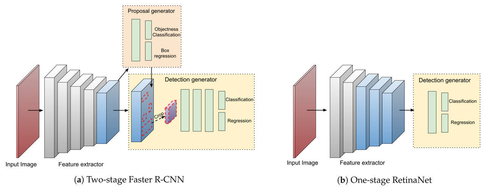

One stage vs two stage object detection
I was going through YOLOv4 paper which often uses the term one & two stage object detection. I was unable to understand what's the difference between the two types of object detectors. I am assuming
- One stage does both region detection + object classification using one network only
- two stage does the above operations using 2 different networks
Is this assumption correct?
Answer
Instead of "region detection + object classification", its "(1)region proposal + (2)classification and localization in two stage detectors.
(1-region proposal) is done by what is called a Region Proposal Network (RPN, for short). RPN is used to decide “where” to look in order to reduce the computational requirements of the overall inference process. The RPN quickly and efficiently scans every location in order to assess whether further processing needs to be carried out in a given region. It does that by outputting k bounding box proposals each with 2 scores representing probability of object or not at each location. In other words, it is used to find up to a predefined number(~2000) of regions (bounding boxes), which may contain objects.
An important problem within object detection is generating a variable-length list of bounding boxes. The variable-length problem is solved in the RPN by using anchors: fixed sized reference bounding boxes which are placed uniformly throughout the original image. Instead of having to detect where objects are, we model the problem into two parts. For every anchor, we ask:
- Does this anchor contain a relevant object?
- How would we adjust this anchor to better fit the relevant object?
After having a list of possible relevant objects and their locations in the original image, it becomes a more straightforward problem to solve. Using the features extracted by the CNN and the bounding boxes with relevant objects, we apply Region of Interest (RoI) Pooling and extract those features which would correspond to the relevant objects into a new tensor.
Next in second stage, R-CNN module uses above information to:
- Classify the content in the bounding box (or discard it, using “background” as a label).
- Adjust the bounding box coordinates (so it better fits the object).
Suggest
One-stage detectors :
Object classification and bounding-box regression are done directly without using pre-generated region proposals (candidate object bounding-boxes).
Two-stage detectors :
- Generation of region proposals , e.g. by selective search as in R-CNN and Fast R-CNN, or by a Region Proposal Network (RPN) as in Faster R-CNN.
- Object classification for each region proposal. Additionally other things can be done such as bounding-box regression for refining the region proposals, binary-mask prediction etc.
Two-stage detectors usually reach better accuracy but are slower than one- stage detectors.
 (image taken from "On the Performance of One-Stage and Two-Stage Object Detectors in Autonomous Vehicles Using Camera Data")